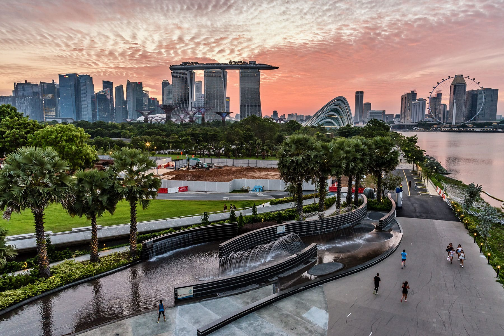
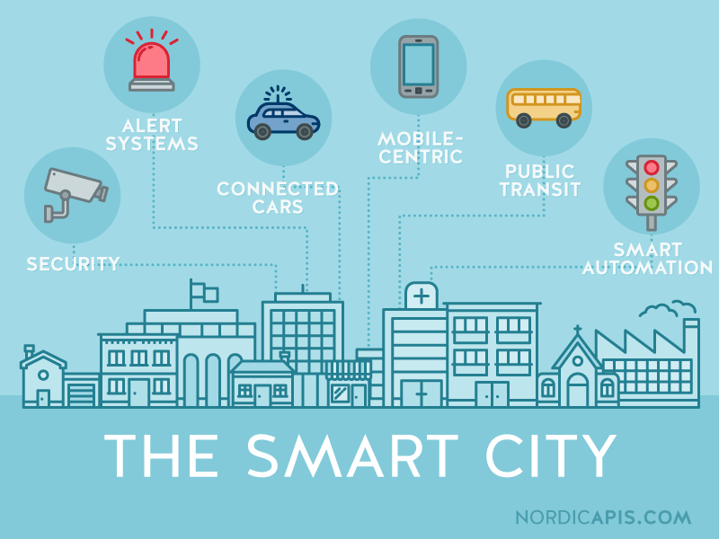

Introduction
Smart Cities are urban environments that use digital technologies to improve the quality of life of citizens, optimize city services, and promote sustainable development. By integrating technology into urban infrastructure, smart cities aim to become more efficient, safe, and environmentally friendly.
Technologies Involved
The development of smart cities relies on the combination of multiple technologies that allow data collection, processing, and decision-making in real time.
- Internet of Things (IoT): Sensors and connected devices that monitor traffic, pollution, energy consumption, and public services.
- Artificial Intelligence (AI): Data analysis and predictive models used to optimize traffic flow, energy usage, and public safety.
- Big Data: Processing large volumes of data generated by sensors, citizens, and services.
- Cloud Computing: Storage and processing of data in scalable and accessible platforms.
- 5G Networks: High-speed communication enabling real-time data transmission.
Smart City Examples
The following images illustrate different aspects of smart city technologies and urban digitalization.
 Potential Risks and Challenges
Despite their benefits, smart cities also present several challenges and risks that must be carefully addressed.
- Privacy: The massive collection of data may compromise citizens’ personal information.
- Cybersecurity: Smart infrastructure can be vulnerable to cyberattacks.
- Digital Divide: Not all citizens have equal access to digital technologies.
- Dependence on Technology: System failures could affect essential city services.
Conclusion
Smart cities represent a significant step toward more sustainable and efficient urban environments. However, their success depends on responsible technological development, strong cybersecurity measures, and policies that protect citizens’ rights while promoting innovation.